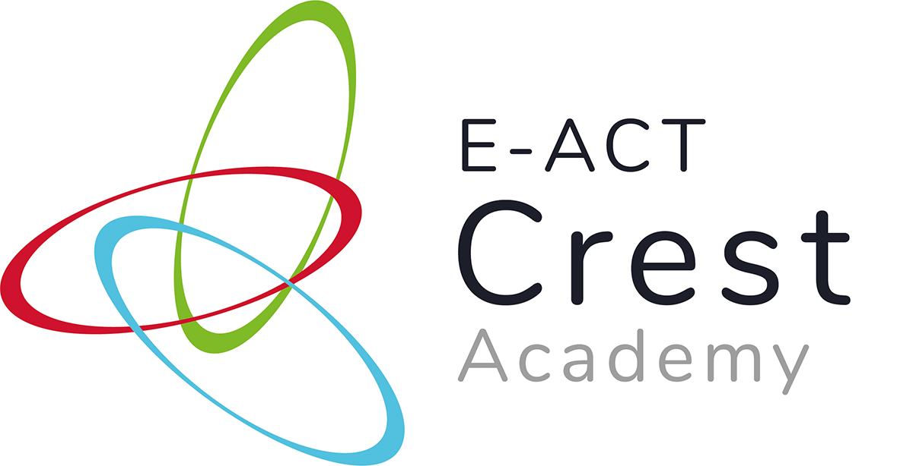

E-ACT Academy Trust
VESPA Cycle 1 Baseline Results
Academic Year 2025/26

November 2025 | 672 Students | 6 Schools
Trust-Wide Overview
5.77
Overall Score
National: 5.94
3.64
Exam Readiness
Good
672
Students
6 Schools
Key Strength: Vision (6.20) - Students have clear goals
Development Area: Systems (5.54) - Organization and planning skills
Development Area: Systems (5.54) - Organization and planning skills
School Performance Comparison
Cycle 1 Baseline | Ranked by Overall Score | Hover over column headers for details
| School | n | Vision | Effort | Systems | Practice | Attitude | Overall | ERI |
|---|---|---|---|---|---|---|---|---|
| Crest Academy | 60 | 7.02 | 6.60 | 6.03 | 6.15 | 6.43 | 6.38 | 3.78 |
| North Birmingham | 88 | 6.83 | 6.42 | 5.53 | 5.94 | 6.56 | 6.26 | 3.92 |
| West Walsall | 74 | 6.15 | 6.01 | 5.15 | 6.00 | 6.31 | 5.95 | 3.69 |
| Montpelier | 125 | 6.50 | 5.38 | 5.68 | 5.86 | 5.35 | 5.74 | 3.44 |
| Daventry 6th Form | 66 | 5.73 | 5.79 | 5.70 | 5.38 | 5.41 | 5.58 | 3.61 |
| Ousedale | 259 | 5.80 | 5.59 | 5.43 | 5.31 | 5.41 | 5.48 | 3.56 |
| TRUST AVERAGE | 672 | 6.20 | 5.82 | 5.54 | 5.65 | 5.74 | 5.77 | 3.64 |
| NATIONAL AVG | — | 6.36 | 5.94 | 5.68 | 5.93 | 5.79 | 5.94 | 3.50 |
■ Green: Above Trust/National (+0.2)
|
■ Red: Below Trust/National (-0.2)
|
Yellow: Highest in category

Crest Academy
6.38
Overall Score
↑ Above National (5.94)
3.78
ERI
60 students
💪 Strongest: Vision (7.02)
🎯 Focus: Systems (6.03)
🚀 Quick Wins - Crest Academy
1. Priority Coaching 5-7 MIN
Target 24-30 middle band students focusing on Systems patterns and goal-setting
2. Team Activity 45 MIN
Staff meeting to identify 3-5 Systems behaviors for consistent reinforcement
3. Weekly Planner 20 MIN
Students audit schedules and create balanced plans - addresses Systems (6.03)
80.8%
Growth Mindset
77.9%
Academic Momentum
45.0%
Active Learning
North Birmingham Academy
6.26
Overall Score
↑ Above National (5.94)
3.92
ERI - Highest
88 students
💪 Strongest: Vision (6.83)
🎯 Focus: Systems (5.53)
🚀 Quick Wins - North Birmingham
1. Priority Coaching 5-7 MIN
Target 35-44 middle band students focusing on Systems and organization
2. Team Activity 45 MIN
Staff meeting to identify 3-5 Systems behaviors for reinforcement
3. Pending, Doing, Done 15 MIN
Visual task management using task boards - builds on organization strengths
77.0%
Growth Mindset
75.0%
Support & Help-Seeking
43.9%
Active Learning
.png)
West Walsall Academy
5.95
Overall Score
• On Par (5.94)
3.69
ERI
74 students
💪 Strongest: Attitude (6.31)
🎯 Focus: Systems (5.15)
🚀 Quick Wins - West Walsall
1. Priority Coaching 5-7 MIN
Target 29-37 middle band students on Systems and organization strategies
2. Team Activity 45 MIN
Staff meeting to identify 3-5 Systems behaviors for reinforcement
3. Weekly Planner 20 MIN
Address time management foundations for lowest Systems score (5.15)
74.7%
Growth Mindset
74.3%
Support & Help-Seeking
43.2%
Active Learning
Montpelier High School
5.74
Overall Score
↓ Below National (5.94)
3.44
ERI
125 students
💪 Strongest: Vision (6.50)
🎯 Focus: Attitude (5.35)
🚀 Quick Wins - Montpelier
1. Priority Coaching 5-7 MIN
Target 50-62 middle band students focusing on Attitude and stress management
2. Team Activity 45 MIN
Staff meeting to identify 3-5 Attitude behaviors for reinforcement
3. First Aid Kit 15 MIN
Stress-dissolving exercises - addresses lowest Stress Management (40.8%)
70.3%
Growth Mindset
40.8%
Stress Management
41.2%
Active Learning
Daventry 6th Form
5.58
Overall Score
↓ Below National (5.94)
3.61
ERI
66 students
💪 Strongest: Effort (5.79)
🎯 Focus: Practice (5.38)
🚀 Quick Wins - Daventry
1. Priority Coaching 5-7 MIN
Target 26-33 middle band students on Practice strategies and Active Learning
2. Team Activity 45 MIN
Staff meeting to identify 3-5 Practice behaviors for reinforcement
3. High & Low Utility 20 MIN
Teach effective vs ineffective study techniques - addresses Active Learning (35.9%)
70.8%
Growth Mindset
47.5%
Stress Management
35.9%
Active Learning
Ousedale School
5.48
Overall Score
↓ Below National (5.94)
3.56
ERI
259 students - Largest
💪 Strongest: Vision (5.80)
🎯 Focus: Practice (5.31)
🚀 Quick Wins - Ousedale
1. Priority Coaching 5-7 MIN
Target 103-130 middle band students on Practice strategies and Active Learning
2. Team Activity 45 MIN
Staff meeting to identify 3-5 Practice behaviors for reinforcement
3. High & Low Utility 20 MIN
Teach effective study techniques - addresses Active Learning (35.8% - lowest)
67.8%
Time Management
48.9%
Study Strategies
35.8%
Active Learning